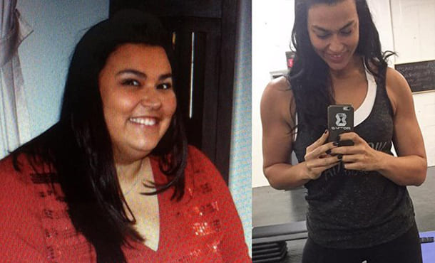
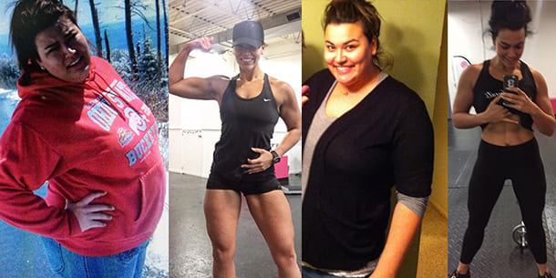
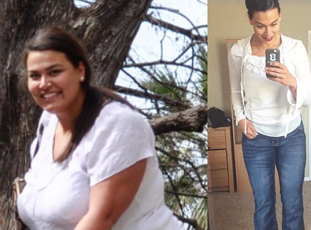
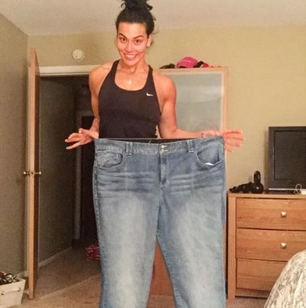

COME PERDERE PESO NEL MIO CASO 42 KG) E TORNARE A VIVERE PIENAMENTE. LA MIA NUOVA VITA È INIZIATA A 33 ANNI!
Salve a tutti, questa sono io, l'autrice di questo blog, adesso e cinque mesi fa. Guardate che belle guanciotte
Ho deciso di condividere la mia storia su come io (in precedenza grassa) sia arrivata a pesare 44 kg.
Ero piuttosto snella, un tempo, ma le cose sono cambiate quando mi sono sposata. Io e mio marito ci sedevamo a guardare la TV mentre mangiavamo panini, e patatine e bevevamo birra, spesso finivamo con un dessert. Molte di voi sanno di cosa parlo. Mi sono sposata e ho smesso di preoccuparmi. Adesso l'anello ce l'ho perché non dovrei rilassarmi? E ho cominciato a prendere un bel po' di chili. La bilancia mostrava il peso record di 79 kg. "Che problema c'è!", pensavo. Mio marito mi ama così come sono.
E continuavo ad ingrassare. Ormai pesavo più di 95 chili.
Mi stavo lentamente trasformando in una scrofa. Non ho problemi a dirlo. Non avevo il doppio mento, ce l'avevo quadruplo. Avrei potuto nascondere dei soldi nelle pieghe del mio ventre, giuro che nessuno sarebbe riuscito a trovarlo. Il mio corpaccione flaccido tremolava tutto ad ogni mia mossa, e ogni mossa mi faceva venire il fiatone. Usavo l'ascensore perfino per salire al secondo piano, tanta era la paura che avevo che mi prendesse un colpo.
Poi abbiamo deciso di avere un bambino, ma è stato più facile a dirsi che a farsi. Quando siamo andati alla clinica della fertilità, mi hanno detto che avrei dovuto perdere peso, e mi hanno dato una dieta rigida. Mio marito mi sosteneva: in casa non c'era più ombra di cibo "proibito". Ho perso 15 chili, tutti mi dicevano che ero fantastica, mi sono adagiata e tutto è tornato come prima. MMM, CIBO, ADESSO POSSO MANGIARE QUANTO VOGLIO. Sono ingrassata di nuovo, anche più di prima.
A trent'anni, avevo seri problemi di salute: colesterolo, pressione alta, disturbi cardiaci e al pancreas, diabete di tipo 2 e perfino la psoriasi. Tutto a causa del mio culone. Non solo avevo un brutto aspetto, ma mi sentivo anche male. Ero del tutto apatica e depressa.
Neanche il mio rapporto andava più tanto bene. Non facevo sesso con mio marito da mesi, all'inizio lui mi stava accanto ma, col tempo, abbiamo del tutto smesso di parlare. È stato allora che ho capito che QUESTA STORIA DOVEVA FINIRE!
Non ho nemmeno preso in considerazione le diete o la ginnastica, entrambi richiedevano tempo e una forza di volontà che non avevo. Dovevo agire alla svelta, per salvare il mio matrimonio. Ho cominciato a fare delle ricerche in Internet ed ho perfino consultato una dietologa online. Le ho descritto la situazione, chiarendole di aver bisogno di un risultato rapido e permanente. La dottoressa mi ha suggerito .
Vorrei averlo saputo prima. Le sono compresse effervescenti che sostengono il corpo durante la chetosi (la carenza di carboidrati nelle cellule). I suoi ingredienti attivi riducono la stanchezza cronica, eliminano l'apatia, prevengono l'"influenza keto" e compensano la mancanza di sostanze nutritive. . Con si possono mangiare cibi contenenti carboidrati, purché non se ne abusi. La formula attiva accelera il processo di combustione dei grassi di 2-3 volte, senza conseguenze per il corpo.
Mi sono misurata e sono stata sorpresa di scoprire di aver perso quasi due centimetri di diametro a settimana.
Nel giro di due mesi, ho perso 12 chili. Senza fare assolutamente nulla! Lo giuro. Ho solo preso e mantenuto le mie normali abitudini alimentari: carne, pasta, pesce, perfino dolci. Ma le porzioni erano molto ridotte. Ho cominciato a sperare, mi sono entusiasmata e ne ho ordinato dell'altro.
Non vi annoierò oltre con la mia storia, ma date un'altra occhiata alla mia foto.
In cinque mesi in tutto, mi ha aiutato a perdere 42 chili. Guardando alle mie foto, so di non voler tornare indietro per nessun motivo. Oggi sono in salute e mi sento splendida. Sono felice, mio marito ed io ci capiamo e siamo perdutamente innamorati. Grazie al cielo i giorni difficili sono un ricordo. Dopo aver perso peso, ho cominciato a sentire il bisogno di fare una vita attiva. Noi ci ingozziamo più davanti al televisore: ora, durante il fine settimana, ci dedichiamo a tante attività.
P.S. Sono contentissima dei miei risultati, che sono convinta che siano alla portata di tutte voi! Siccome nei commenti ho notato che molte di voi sono interessate a dimagrire, ho deciso di condividere la mia esperienza. Se, come me, trovate difficile perdere peso nella maniera tradizionale, qui potete ordinare . Sono sicura che cambierà anche la vostra vita.
Commenti: